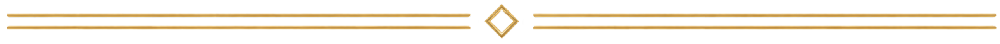
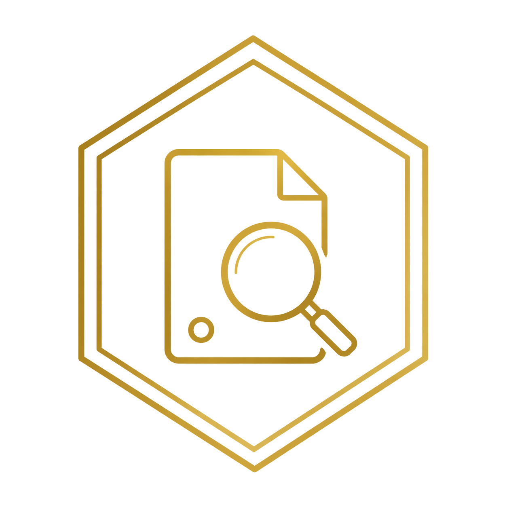

Forense Digital com Rigor Técnico e Validade Jurídica
Transformamos dados em prova. Com método, integridade e precisão.

Atuação Técnica
A Probatum Forense Digital é uma empresa especializada em soluções de perícia digital voltadas ao suporte técnico em demandas jurídicas e corporativas. Com atuação estratégica nas áreas cível, trabalhista e administrativa, a empresa oferece suporte qualificado a escritórios de advocacia e organizações que necessitam de análise técnica robusta em evidências digitais.


Evidência Digital
Transformação de dados brutos em elementos probatórios válidos, compreensíveis e utilizáveis no contexto jurídico.

Análise Técnica
Interpretação especializada de dados digitais com foco na extração de informações relevantes para tomada de decisão.
Confiabilidade
Metodologia estruturada que permite resultados reproduzíveis e tecnicamente verificáveis.

Integridade
Utilização de mecanismos técnicos para assegurar que os dados analisados permanecem inalterados durante todo o processo.

Sustentação
Elaboração de pareceres e laudos fundamentados, com linguagem clara e base técnica sólida para sustentação em processos e auditorias.
Atuação Jurídica
Perícia em dispositivos móveis
Aquisição forense
Recuperação de dados
Análise de evidências digitais
Validação de integridade
Aquisição web com preservação
Elaboração de laudos periciais
Parecer técnico
Assistência técnica judicial
Quesitos e manifestação técnica
Atuação Corporativa
Investigação interna
Auditoria digital
Análise de incidentes
Por que a Probatum?
1. Metodologia Técnica Estruturada
Procedimentos padronizados e fundamentados em boas práticas internacionais, garantindo que cada etapa da análise digital seja conduzida com consistência, rastreabilidade e rigor técnico.
2. Preservação Rigorosa da Evidência
Aplicação de técnicas de coleta e preservação que asseguram a integridade dos dados, evitando alterações indevidas e mantendo a validade da evidência ao longo de todo o processo.
3. Comunicação Clara para o Meio Jurídico
Elaboração de documentos técnicos com linguagem acessível e estruturada, permitindo que advogados, magistrados e partes compreendam com clareza os resultados da análise.
4. Ferramentas Próprias para Coleta e Aquisição
A Probatum conta com uma suíte própria de ferramentas desenvolvidas para apoiar procedimentos de coleta, aquisição e preservação de evidências digitais, proporcionando maior agilidade, padronização e dinamismo ao processo técnico.